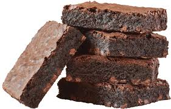
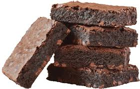

Brownies
- Gather Ingredients: ½ cup of oil or 1 stick of butter 1 cup of sugar 1 teaspoon of vanilla extract 2 eggs ¼ teaspoon of baking powder ⅓ cup of cocoa powder ¼ teaspoon of salt ½ cup of flour
- Preheat and Prepare: Preheat your oven to 350 degrees F (175 degrees C). Grease an 8-inch or 9x13 inch pan. Combine Wet Ingredients: Melt butter (if using) and blend with sugar. Add eggs and vanilla extract, mix until blended.
- Combine Dry Ingredients: In a separate bowl, mix cocoa powder, flour, baking powder, and salt.
- Combine Wet and Dry: Add the dry ingredients to the wet ingredients and mix until just combined.
- Pour and Bake: Pour the batter into the prepared baking pan. Bake for 20-30 minutes, or until a toothpick inserted into the center comes out with moist crumbs (for fudgier brownies).
- Cool and Serve: Allow brownies to cool before slicing and serving.
Insights
Tips: For fudgier brownies, ensure you don't overbake; the toothpick test should show some moist crumbs, not be completely clean. If using melted butter, let it cool slightly before adding eggs to avoid cooking them. Avoid overmixing the batter after adding the dry ingredients. Consider adding chocolate chips or nuts before baking. Allowing the brownies to cool completely before cutting helps them hold their shape.
 

Go Back